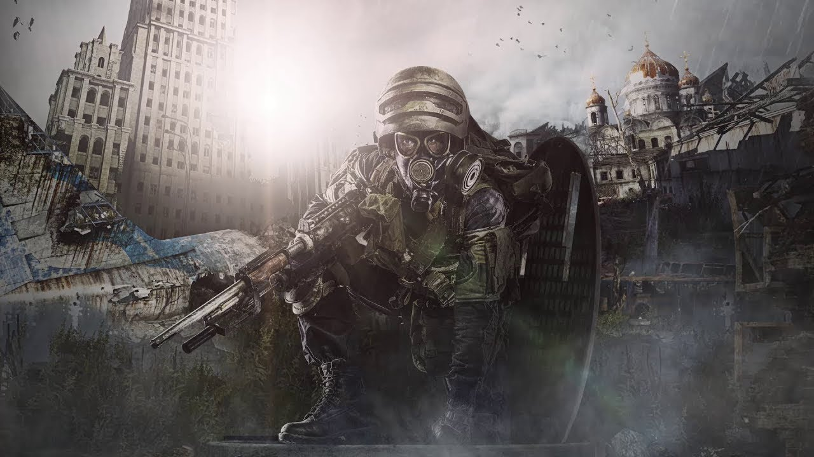

Год после событий Metro 2033. Артём жив, но несёт груз вины. Единственный выживший Тёмный найден — и именно он становится ключом к будущему человечества.
← Все игрыСобытия разворачиваются в 2034 году — год спустя после уничтожения логова Тёмных. Артём теперь рейнджер Ордена, но не может избавиться от чувства, что совершил непоправимую ошибку. Метро погрязло в политических интригах, и никому нет дела до истинной угрозы.
Полковник Миллер сообщает Артёму: один маленький Тёмный выжил. Он был обнаружен разведкой Ордена. Миллер приказывает уничтожить его — как потенциальную угрозу. Артём отправляется на миссию, но вместо этого оказывается захвачен шпионом Красной линии.
Красная линия и Рейх готовят войну за контроль над оружием Д-6 — секретным советским бункером, набитым ядерным арсеналом. Тот, кто получит Д-6, получит власть над всем метро.
В плену у Красной линии Артём встречает своего старого знакомого Павла — офицера коммунистов. Но политика метро жестока: Павла предают свои же. Артём сбегает и встречает Анну — дочь Миллера и лучшего снайпера Ордена.
Между Артёмом и Анной вспыхивают чувства. Она становится его союзником и со временем — женой. Их отношения — один из немногих тёплых лучей в холодном мире подземелья.
На протяжении всей игры маленький Тёмный сопровождает Артёма — невидимо или в видениях. Постепенно герой понимает: существо не опасно. Оно хочет помочь. Оно разумно.
Финал игры определяется выборами игрока. Главный вопрос: можно ли остановить войну и дать Тёмным шанс? Или ненависть и страх снова победят разум?
Повзрослевший герой. Несёт груз решений 2033 года. Теперь рейнджер, но внутри — всё тот же сомневающийся юноша с ВДНХ.
Лучший стрелок Ордена. Независимая, острая на язык. Сначала высмеивает Артёма, но постепенно влюбляется. Станет его женой.
Суровый, волевой командир. Прагматик, готовый пожертвовать всем ради выживания метро. Но в финале должен сделать выбор — власть или жизнь дочери.
Единственный уцелевший после бомбардировки. Разумен, любопытен, не агрессивен. Его жизнь и смерть определяет будущее обоих видов.
Возвращается из Metro 2033. Двойственный персонаж — верен идеологии, но его предают свои. Трагичная фигура жертвы системы.
Главный антагонист. Готов развязать войну за Д-6. Бывший союзник Миллера, ставший предателем ради власти и идеологии.
Артём жертвует собой — взрывает Д-6 вместе с армией Красной Линии. Метро спасено от войны, но ценой жизни Артёма. Маленький Тёмный улетает один. Анна теряет мужа. Надежды на союз двух видов нет.
Если собрать моральные очки — Тёмные возвращаются. Целая стая существ уничтожает армию Красной Линии. Артём выживает. Маленький Тёмный прощается — и улетает к своим. Впервые за двадцать лет есть настоящая надежда.